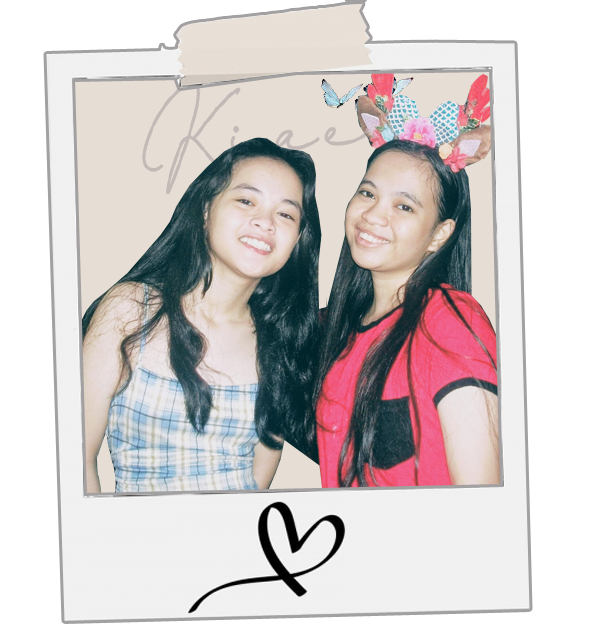
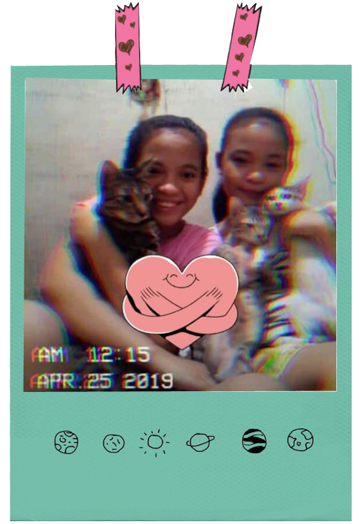
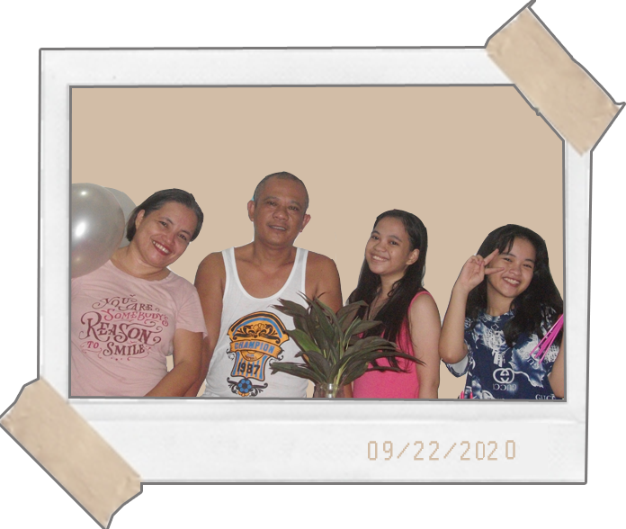
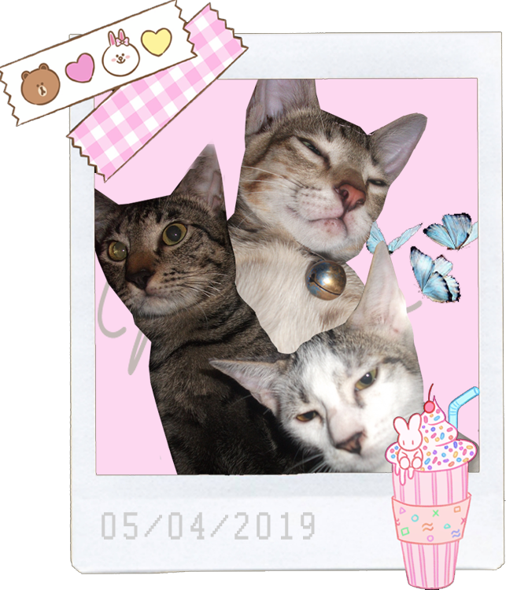

A college student from Pamantasan ng Lungsod ng Pasig
taking up Bachelor of Science in Information Technology.
Hi! I am Kiae. My full name is Kiae Noela Mae Cruiz but, you can just call me Kiae, or Noela, or Noela Mae. I was born on September 22, 2002 and currently I am 18 years old. I live in Pasig City. I am attending Pamantasan ng Lungsod ng Pasig College of Computer Studies, 1st year. I graduated high school at Arellano University-Pasig. I completed junior high in Sagad High School.
We have a small family. My parents, me and my sister, and our cats. I have one sister, and I am the eldest. My younger sister, Shem, is currently 12 years old, a grade 7 student in Rizal High School. My father is Noe Cruiz, currently 44 years old, and my mother is Maria Cruiz, currently 45 years old.




My hobby is watching Korean Dramas. I do this whenever I have free time. I also like browsing my social media and search some funny videos or memes there. I also love buying items online, most especialy when there is a big sale. Other than these, it is also my hobby to edit pictures, or take pictures.
As for my talent, to be honest, I haven't found anything yet. I just know how to do things, but I am not great at anything. The only thing that people around me points out is that I have a pretty handwriting. Maybe, it can be consider as talent? Haha. Anyway, I am trying to learn some calligraphy skills whenever I have time or I am in the mood for it.
My creativeness can also be considered as my strength. I love to search or do designs that are pleasing to my eyes, and I think, it will be very useful in my future career. I have a little knowledge about programming, and I am also dilligent in learning new things about programming.
One of my weaknesses is that I am easily distracted. Even the small things can distract me when I am in the middle of doing something. I also lack confidence that makes it hard for me to say some of my opinions to other people. Aside from these, I am also easily discourage when things don't go my way.
Despite my weaknesses, I still want to be sure about the path I am going to take in the future. As of the moment, I am thinking about being a Data Entry Operator or Encoder. But, I am also thinking about being a web developer if I can. Regardless, I still hope that I could get the career I want that is related to what I am taking in the present. So that my four years in this course will not be a waste.